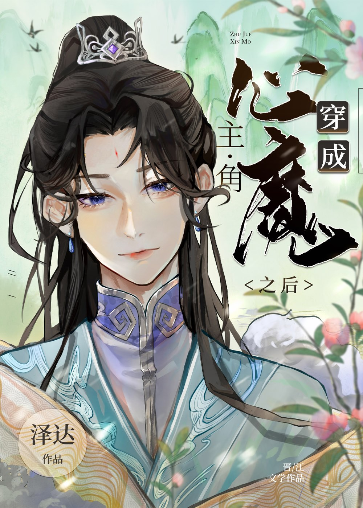

Xiao Mo viajó accidentalmente a un libro y se convirtió en el demonio interior del protagonista.
El sistema introdujo activamente: "Debes acompañar a Chu Jinglan en su crecimiento y luego morir a manos de él en el momento oportuno para demostrar su Dao. Tras completar la tarea, tendrás la oportunidad de renacer y sobrevivir en el mundo de la cultivación con una nueva identidad. ¡Qué buen trato!".
Inesperadamente, Xiao Mo cerró los ojos y se acostó después de escuchar: "Lo entiendo, no lo haré, morirá si quiere".
Sistema: ? ? ?
¿De dónde salió la hueste rebelde? ¡Es diferente a lo acordado!
Xiao Mo se sentía muy desafortunado. No solo se vio obligado a viajar en el tiempo, sino que también tuvo que ser el demonio interior de alguien que no le gustaba y vivir con él día y noche.
Así es, a Xiao Mo no le gustó el diseño del personaje de Chu Jinglan.
Porque en el libro original, Chu Jinglan podría haber tomado el guion de Long Aotian, un genio que fue abolido y luego renació, pisando montañas y ríos, y arrasando el mundo con una espada. Sin embargo, por el capricho de un galán voluble, murió sin dejar rastro.
Pensando que era un artículo orientado a su carrera, pero inesperadamente salpicado de sangre canina, Xiao Mo expresó con decisión su desdén. Quería ser pasivo, indiferente y no tener nada que ver con lo que hiciera Chu Jinglan.
Observó fríamente cómo el joven pasaba de ser un orgulloso hijo del cielo a un lisiado, observó fríamente cómo su compromiso se anuló y fue humillado, observó fríamente cómo fue traicionado y abandonado por su propia familia, observó fríamente... ¡No podía mirar más!
Chu Jinglan, ¿puedes soportar esto? ¡Defiéndete! Si no puedes, dame tu cuerpo, ¡lo haré!
Chu Jinglan, quien también estaba harto de él, se limpió la sangre. Al ver al demonio interior, que estaba más ansioso que él, su expresión era compleja e impredecible: "¿...Necesito que el demonio interior me ayude?"
Xiao Mo: ¿Quién quiere ayudarte?
Pero fue este demonio interior a quien "no le importaba" la vida y la muerte del protagonista, quien acompañó a Chu Jinglan a reconstruir su cultivo, lo acompañó a ascender a la cima y lo acompañó en los momentos más difíciles de su vida.
Entonces, cuando estaba en lo más alto, el demonio interior murió en sus brazos.
Xiao Mo yacía en los brazos de Chu Jinglan y vomitaba sangre, pensando que se mantendría lejos de él después de su renacimiento.
Después de que renació, antes de que pudiera esconderse, Chu Jinglan, quien se había convertido en un señor inmortal, apareció de repente frente a él.
"Xiao Mo", los ojos de Chu Xianzun estaban tranquilos pero había un rastro de locura en su interior, "¿Dónde quieres dejarme esta vez?"
Xiao Mo: !
Espera, he cambiado mi identidad, ¿cómo me reconociste?